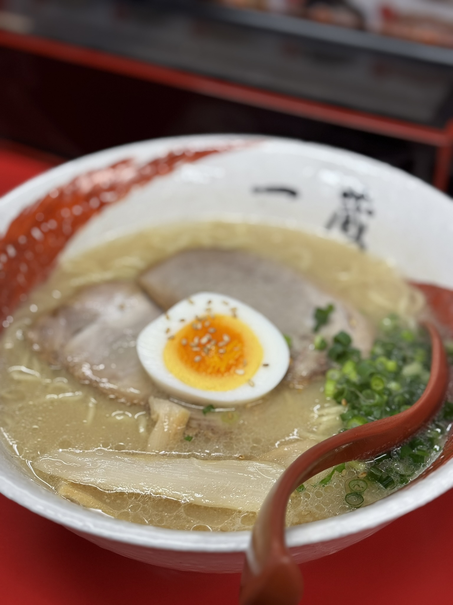
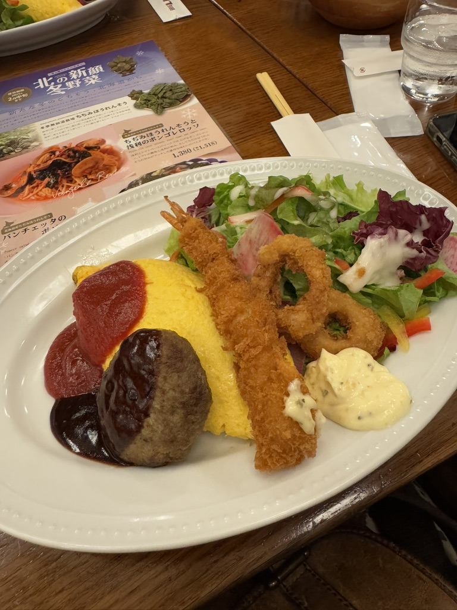
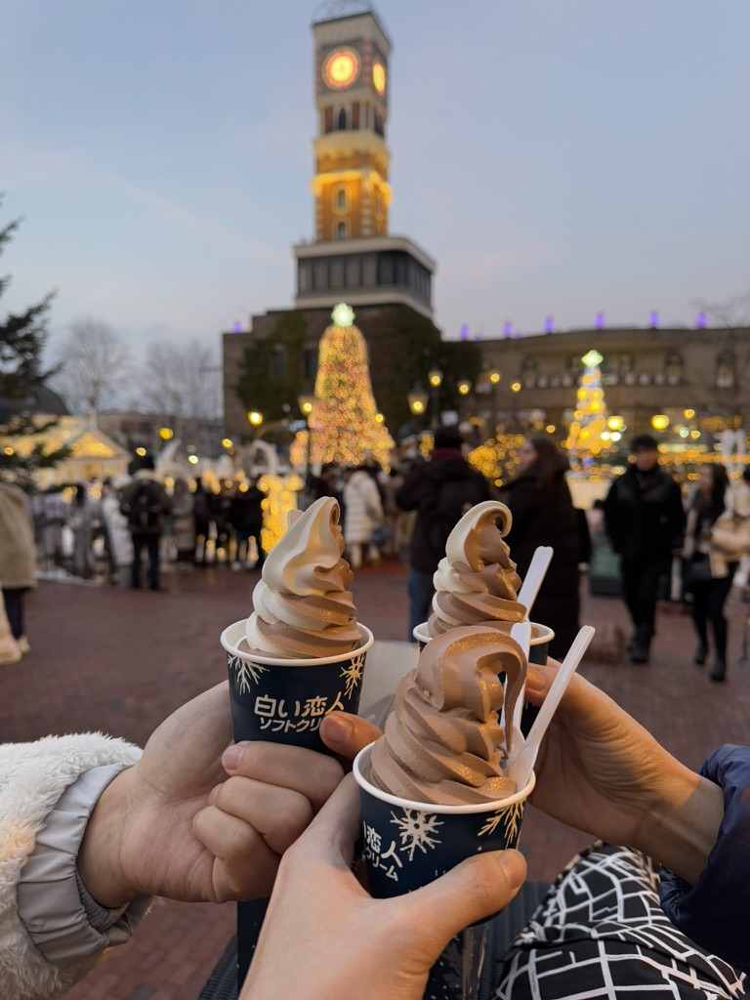

SapporoArrival Night Ramen Alley
A late 22:30 bowl after landing in Hokkaido, with savoury broth and a cramped-but-cozy ramen shop feel.
Food
A place for dishes, snacks, cafes, markets, and meals that deserve a little note before they fade from memory.

SapporoA late 22:30 bowl after landing in Hokkaido, with savoury broth and a cramped-but-cozy ramen shop feel.
 Sapporo
Sapporo
The restaurant name is forgotten for now, but the fresh salmon sashimi and juicy king crab leg were worth remembering.
 Sapporo
Sapporo
A relaxed hotel-room dinner after Mt. Moiwa, with convenience store snacks, crab-style bites, egg, chicken, and dessert.

SapporoA comforting lunch plate after the shrine, with omurice, fried seafood, salad, and hamburger-style patty.

SapporoA delicate, sweet soft serve eaten outside in freezing Sapporo weather after seeing how the biscuits are made.
 Osaka
Osaka
Yakiniku near Shinsaibashi with legitly good meat and a large, tasty udon bowl after landing in Osaka.
 Osaka
Osaka
A simple, filling curry lunch after Osaka Castle, with crispy cutlet, warm sauce, and easy travel-day comfort.
 Tokyo
Tokyo
A late lunch after flying into Tokyo, with crispy beef cutlet, hot stones, rice bowls, and best-meal energy.